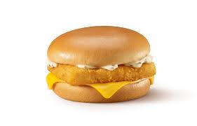

Revisao de estudo
Esse é uma forma que eu criei de relembrar depois de tanto tempo sem estudar Mas quanto tempo?
Uma semana mais ou menos.
Objetivo do estudo
- Usar listas
- Usar formatacoes de texto
- Inserir imagem
- Usar outros recursos extras que o Professor Guanabara ensinou
Lista ordenada
Objetivo: Uma lista ordenada em numeros romanos minusculos começando em iv
Lista dos meus fast foods preferidos, depois de McDonald's, Burger King e KFC
- Social Burguer (r.i.p. 💀)
- Pizza Hut
- Hamburgueria do Rafa
- Bob's
- Gostosao lanches
Imagem
Objetivo: Insrir uma imagem. Caso precise alterar o tamanho, use o GIMP®
Meu hamburguer preferido

Lista de definiçao
Objetivo: Criar uma lista de definicao com tres termos
- Tiras de frango do KFC
- Delicioso lanche, tiras de trango crocantes. Nao é um lanche vegetariano
- Alabama burguer do Old Wild West
- Saboroso hamburguer vegetariano que se pode comer no Old Wild West
- Old Wild West
- Rede de resurantes tematicos que tem mais de 200 sedes espalhadas pela Italia
Conclusao do estudo
- Eu esqueci de por o parametro type na lista ordenada e meu resultado nao foi como eu planejei
- Descobri que a tag mark nao pode ser usada dentro da tag <dd> (eu acho)
Acho que to pronta pra ir pro proximo assunto. ✅